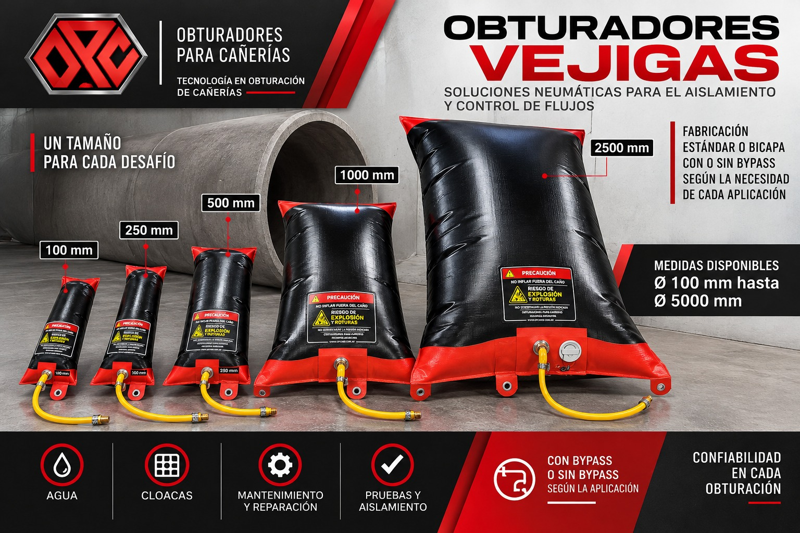
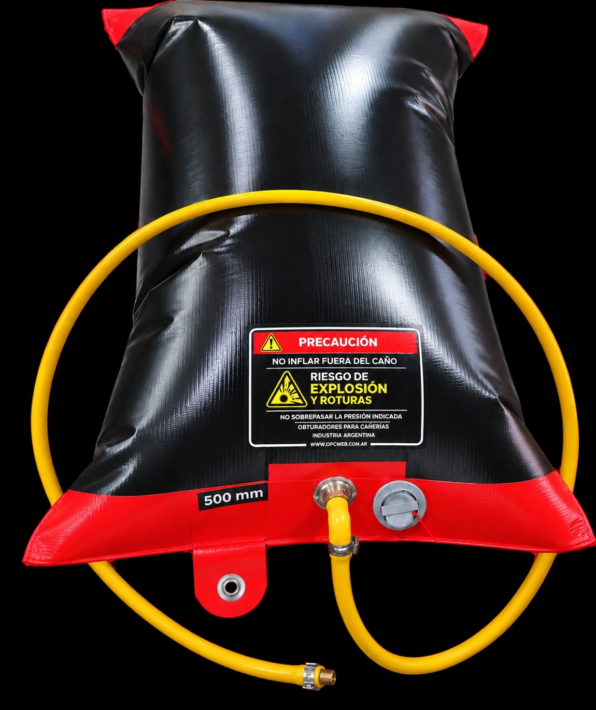
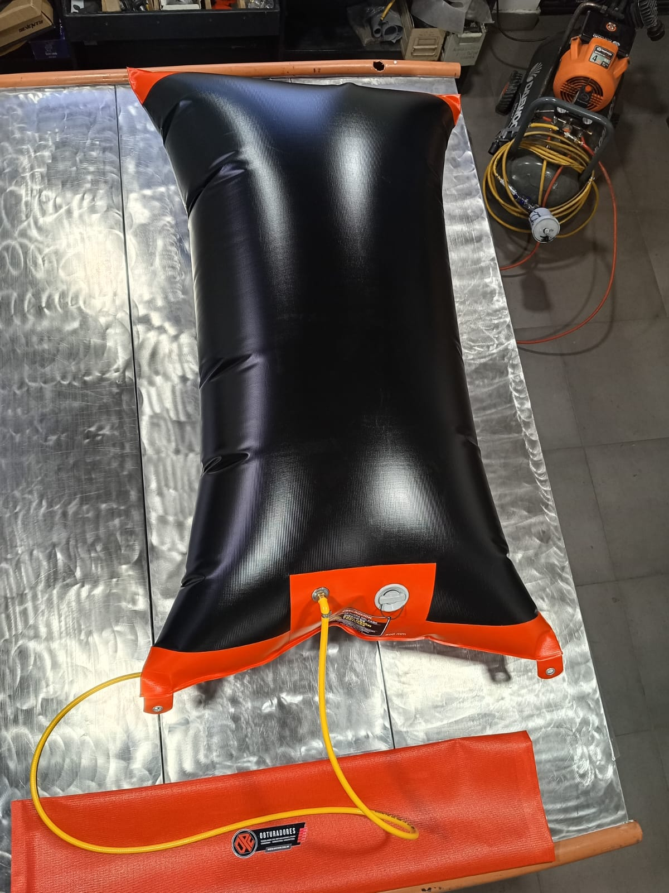
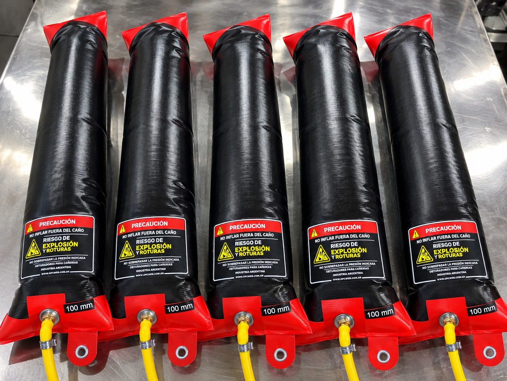
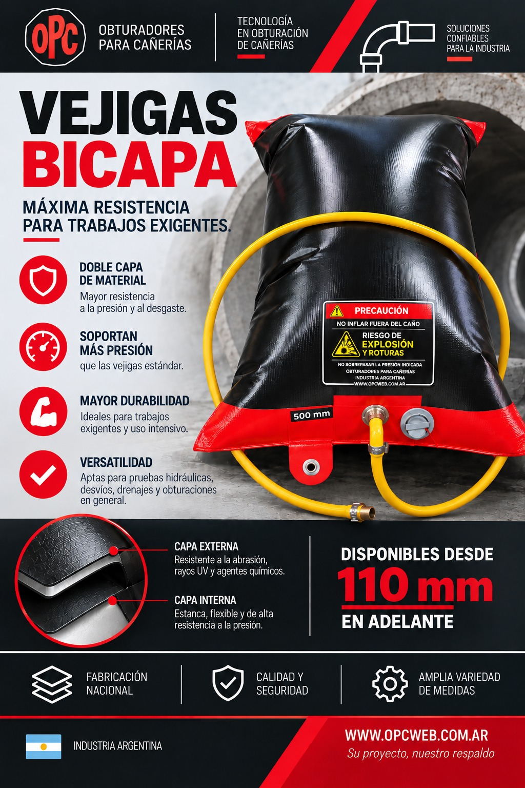
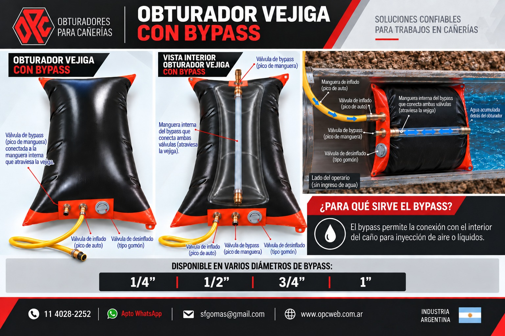
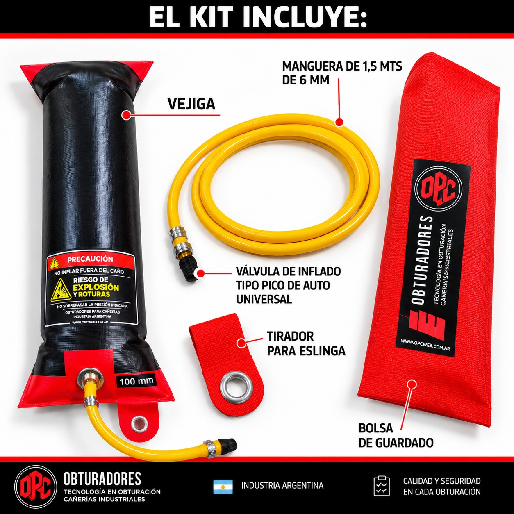

Obturadores vejiga
Obturación flexible de cañerías, de Ø100 mm a Ø5000 mm.
Obturación temporal de cañerías para reparación, mantenimiento, limpieza e inspección. Sellado rápido y adaptable.


Características
Por qué elegirlos
- De 100 mm a 5000 mm de diámetro
- Estándar y bicapa, con el doble de presión
- PVC flexible y resistente al desgarro
- Livianas y fáciles de transportar


Aplicaciones
- Obturación temporal de conductos
- Ensayos hidráulicos de cañerías
- Reparación y mantenimiento
- Desvío de flujo en redes
Instalación y uso
Enganchar la eslinga al tirador e introducir el obturador en sentido contrario al flujo.
Centrarlo e inflarlo progresivamente con bomba manual o compresor con manómetro.
Para retirarlo, desinflar y tirar de la eslinga.
Ø100 mm a Ø5000 mm
Datos técnicos
Vejigas bicapa
- Doble capa de material: mayor resistencia a la presión y al desgaste
- Soportan mayor presión que una vejiga estándar
- Mayor durabilidad para trabajos exigentes
- Disponibles desde 110 mm en adelante

| Modelo (diámetro nominal) |
Estándar | Bicapa | ||||||||||
|---|---|---|---|---|---|---|---|---|---|---|---|---|
| Ø interior admisible (mm) | Ø mínimo desinflado (mm) | Presión de inflado máx. (PSI) | Presión de servicio (PSI) | Largo total (mm) | Peso aprox. (kg) | Ø interior admisible (mm) | Ø mínimo desinflado (mm) | Presión de inflado máx. (PSI) | Presión de servicio (PSI) | Largo total (mm) | Peso aprox. (kg) | |
| DI 110 mm | 95 - 120 | 60 | 25 | 20 | 590 | 0,400 | 95 - 120 | 60 | 35 | 30 | 590 | 0,800 |
| DI 160 mm | 140 - 170 | 100 | 25 | 20/22 | 590 | 0,500 | 140 - 170 | 100 | 35 | 30 | 590 | 1,000 |
| DI 200 mm | 180 - 220 | 120 | 22 | 20 | 690 | 0,660 | 180 - 220 | 120 | 30 | 25 | 690 | 1,200 |
| DI 250 mm | 200 - 260 | 140 | 22 | 20 | 690 | 0,800 | 200 - 260 | 140 | 30 | 25 | 690 | 1,600 |
| DI 315 mm | 290 - 330 | 180 | 16 | 14,5 | 940 | 0,900 | 290 - 330 | 180 | 20 | 16 | 940 | 1,800 |
| Modelo (diámetro nominal) |
Estándar | Bicapa | ||||||||||
|---|---|---|---|---|---|---|---|---|---|---|---|---|
| Ø interior admisible (mm) | Ø mínimo desinflado (mm) | Presión de inflado máx. (PSI) | Presión de servicio (PSI) | Largo total (mm) | Peso aprox. (kg) | Ø interior admisible (mm) | Ø mínimo desinflado (mm) | Presión de inflado máx. (PSI) | Presión de servicio (PSI) | Largo total (mm) | Peso aprox. (kg) | |
| DI 400 mm | 375 - 415 | 180 | 16 | 14,5 | 1360 | 1 | 375 - 415 | 180 | 20 | 16 | 1360 | 2 |
| DI 500 mm | 475 - 515 | 140 | 12 | 10,5 | 1360 | 2,5 | 475 - 515 | 160 | 15 | 12 | 1360 | 5 |
| DI 600 mm | 580 - 630 | 290 | 10 | 7 | 1360 | 3 | 580 - 630 | 290 | 14 | 10 | 1360 | 6 |
| DI 800 mm | 700 - 900 | 300 | 3,5 | 2 | 2550 | 8 | 700 - 900 | 400 | 4,5 | 3 | 2550 | 10 |
| DI 1000 mm | 900 - 1150 | 350 | 2 | 1 | 2650 | 5 | 900 - 1150 | 450 | 3,5 | 2 | 2650 | 10 |
Sistema bypass
Conecta con el interior del caño para inyectar aire o líquidos durante reparaciones.
Diámetros de bypass disponibles: 1/4" · 1/2" · 3/4" · 1"
El kit incluye
- Vejiga
- Manguera de 1,5 mts de 6 mm
- Válvula de inflado tipo pico de auto universal
- Tirador para eslinga
- Bolsa de guardado

Video